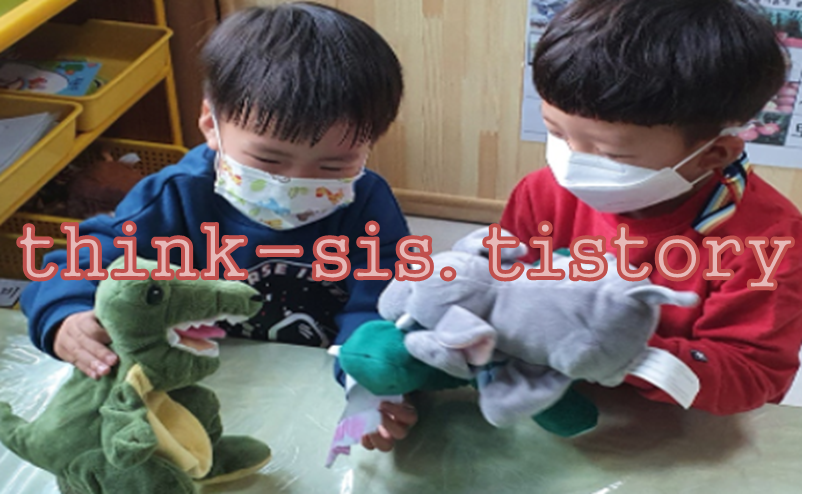

1. 공격적 행동 의의 및 특성
공격적인 성향을 가진 아이는 이유 없이 다른 사람의 신체 할퀴기, 소리 지르거나 머리 부딪히기, 깨물기, 물건을 부수거나 던지기, 욕하기, 싸우기 등의 행동을 한다. 공격성이란 다른 사람에게 신체적 상처를 입히거나 파괴하는 행동과 의도적으로 정신적인 위협을 가하는 것이다. 공격성의 목적은 자신의 욕구를 성취하기 위한 것이다. 영아기(생후 6개월)부터 생리적인 욕구와 사회적 승인 및 애정을 드러내기 시작하는데, 2.5세에 분노폭발이 최고치에 이르면서 본능적인 공격성이 증가한다. 이런 공격성은 사회적응능력을 위한 기술을 습득하지 못했거나 양육방법의 잘못 등이 원인으로서 권위의 한계를 시험하기 위한 거부증을 보여주고자 하는 것이다.

2. 지도 방법
1) 신경학적 기질 이해
관심을 받으려 하는 시도를 많이 하는 아이일 때 공격적 행동이 나타난다. 또한 목표가 좌절되었을 때 강하고 지속적으로 분노를 표현하고, 공격적 행동 위험이 높아진다. 또한 열등감을 느낀 경우 욕구불만이나 불안요소에 의해 자신을 방어하는 방법을 사용하므로 기질을 이해하고 정서적 안정감을 지지하면서 신체적 활동으로 발산시키도록 하여야 한다.
② 사회적 기술과 태도 함양
공격적 성향의 영유아는 효과적으로 의사소통할 수 있는 방법을 잘 모르는 경우가 많다. 질투심이 있는 경우 교사에게 민감하게 반응하며 눈치를 본다. 직접 접촉하는 가족이나 주변 친한 사람들에게 공격 행동으로 표현하기 쉽다. 따라서 아이에게 대화하는 방법, 친구들이 놀고 있을 때 접근하는 방법, 감정 표현하는 방법, 스스로 자기 화를 푸는 방법, 다른 사람에게 도움 청하는 법 등 사회적 기술과 태도를 가르친다.
③ 자기중심적인 사고
공격적인 행동을 하는 가장 큰 원인은 자기중심적인 사고 때문이다. 아이는 언어를 통해 자신의 의사를 표현하기 어려울 때 순간적으로 쉽게 공격적인 행동을 한다. 사회성을 배워가는 기술과 태도로 타인의 입장을 이해하는 훈련이 필요하다. 공격행동을 하기 전에 자신의 생각을 말로 표현하는 방법을 연습한다.
④ 공격적인 환경의 조절
양육자를 포함한 공격적인 주변 사람들의 영향이 영유아의 공격성을 부추긴다. 양육자가 충동성이 높고 좌절 인내력이 낮은 특성, 우울 증상, 부부싸움으로 갈등이 있는 경우에, 특히 양육에서 양육자의 의견이 다르고 자아탄력성이 없을 때 아이는 주의를 끌기 위해 공격적 행동을 나타낸다.
⑤일관성 없는 양육 태도
양육자가 어떤 때는 아이의 공격성을 받아주고 어던 때는 체벌하는 경우, 아이의 화를 자극하고 반대로 양육자가 너무 허용적이어서 아이의 공격적 행동에 제재를 가하지 않는 경우 공격적 표현을 더 자주 하게 된다. 결국 너무 허용적인 양육자나 너무 처벌적인 양육자 모두 아이의 공격적 행동을 조장할 수 있다.
⑥ 과잉보호 및 간섭
양육자가 너무 엄격하거나 거부적 태도를 가지면 아이는 정서적으로 불안하거나 갈등을 간직하게 된다. 과잉통제하는 가정에서 성장하는 경우 자기보다 약한 아이에게 공격적인 행동으로 분풀이를 하기도 한다. 반면 양육자가 과잉보호로 자유를 너무 허용하여 모든 것을 다 들어주는 경우에도 공격성을 키울 수 있다. 즉, 교사와 성인의 명령, 무시, 간섭, 금지 등이 많을수록 아이의 폭력 및 난폭한 행동을 유발하는 경우가 많다.
⑦ 텔레비전이나 전자매체의 모방
TV, 비디오, 영화, 컴퓨터, 휴대전화 등 전자 매체를 통하여 아이가 폭력적인 프로그램에 자주 노출되면 평상시 잘 알지 못했던 공격 행동을 보고 배우게 된다. 매체를 통한 공격성이 초기에는 끔찍하고 무섭다고 하다가 면역이 되어 특정 인물에게 동일시하면서 공격성을 문제해결의 방법으로 학습하게 된다. 따라서 텔레비전이나 전자매체에서 프로그램 선택에 주의하도록 해야 한다.
박순길 외 공저(2021). 영유아생활지도 및 상담- 10장 부적응행동의 지도 방안 중에서